Hunter Guide
Introduction
Hunter is a skill that came out in the base game in 2006. The hunter skill is mainly fantastic for ranged weapons but has a few other perks that come along with it. In 2009scape, it's one of the least worked on skill for implementation as of April 2023. In this guide, I'll be sharing all of the training methods, perks, and more for the hunter level.
Tracking
Tracking requires a Noosing wand which can be bought for 4gp from hunter shops. Some kebbits live in burrows and you'll have to search one to see where the tracks are leading away from them. You'll need to search nearby snow drifts, bushes, logs, tunnels, and more nearby the end of the track. This will extend the track quite a few times and at the end of it, you'll receive a message saying that a Kebbit is inside. You'll want to attack the object with the noosing wand to gain experience.
| Hunter Level |
Creature |
Image |
Location |
Experience |
Drops |
| Level 1 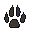 | Polar Kebbit | 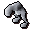 | Rellekka Hunter area | 30 | Polar Kebbit fur, Bones, Raw Beast Meat |
| Level 3 | Common Kebbit | 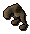 | Piscatoris Hunter area | 36 | Common Kebbit Fur, Bones, Raw Beast Meat |
These are the currently implemented ones.
Bird Hunting
Bird Hunting requires a Bird Snare which can be bought for 6 coins from a Hunter Shop. After setting up a trap, if a bird lands on it, you'll remove the bird and get experience. If no bird lands on the trap, the trap will fall apart, if the player does not reset the trap, the trap will fall to the ground and possibly despawn.
| Hunter Level |
Bird |
Image |
Location |
Experience |
Drops |
| Level 1 | Crimson Swift | 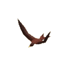 | Feldip Hunter Area | 34 | Red Feathers, Bones, Raw Bird Meat |
| Level 5 | Golden Warbler | 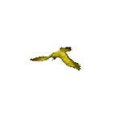 | Kharidian Desert | 48 | Yellow Feathers, Bones, Raw Bird Meat |
| Level 9 | Copper Tail | 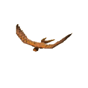 | Piscatoris Hunter area | 61 | Orange Feathers, Bones, Raw Bird Meat |
| Level 11 | Cerulean Twitch/td> | 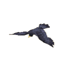 | Rellekka Hunter Area | 64 | Blue Feathers, Bones, Raw Bird Meat |
| Level 19 | Tropical Wagtail | 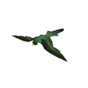 | Feldip Hunter Area | 95 | Striped Feathers, Bones, Raw Bird Meat |
PitFall Traps
One of my personal favorite ways of training Hunter involves the pitfall traps. You'll also need a teasing stick, knife, and logs to set the traps.
| Hunter Level |
Creature |
Image |
Location |
Experience |
Drops |
| Level 31 | Spined Larupia | 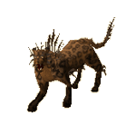 | Feldip Hunter Area | 165 | Larupia Fur, Bones |
| Level 41 | Horned Graahk | 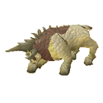 | Karamja Hunter Area | 231 | Graahk fur, Bones, |
| Level 55 | Sabre-toothed Kyatt | 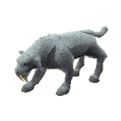 | Relleka Hunter Area | 315 | Kyatt Fur, Bones |
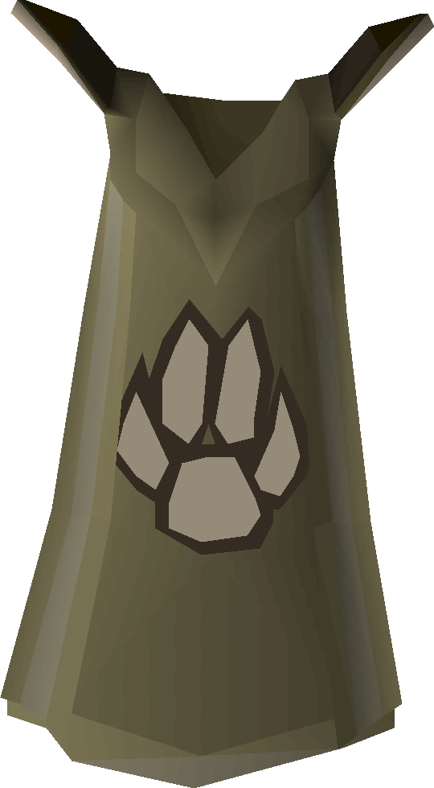 Skill Mastery
In 2009scape, we had decided in the polls that we would add Skill Cape Perks in the game. You are able to find more perks by clicking here. It has been decided that the Mining Skill Cape that would have the following perk: Your mastery of mining has brought you a great familiarity with the grain of rocks. It becomes slightly faster to mine any ore.
Note: If you see something not on this page that currently is in-game please let Summer know.